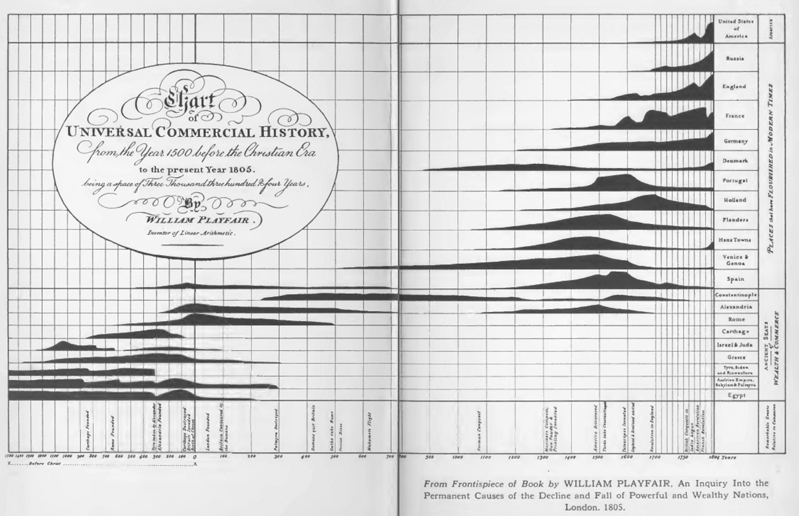

Bonus blogpost: Historic Data Visualisation

Data visualisation was used previously and still is being used for statistical graphs and data visualization,” the graphic portrayal of quantitative information has deep roots” (Friendly, 2008).Data Visualisation, is telling a picture, with the stats. The stats were used for mapping and path finding.
The above data/ visualisation is of the KNSM (Koninklijke Nederlandsche Stoomboot-Maatschappij) Island, a man-made island in the eastern docklands of Amsterdam, this chart give the details and the architecture style of the this man-made island, referring to the Kidd reading, of making the space very clear and simple, not making it over crowded, on this visualisation, we can see the different stats of the island, on the bottom of the chart (x-axis) it indicates the years of when the island was made and the stats that corresponds with (y-axis) the countries that were interested and that visited the island in which year. It also shows the decline and the fall of the different powerful countries and wealthiest nations over the years.
Taking it back to what Friendly says of how visual data was used, to map out things, we see that clearly in this chart of the KNSM island, this is a chart that shows and makes use of what looks like mountains to indicate the rise and the decrease of the wealthiness of the different countries. The graph, answers all of the questions and the requirements that Knaflic makes.- The who, the action, the mechanism, how: looking who the stats, should be speaking to, how the stats will be communicated and why they are being communicated.
- Effective visuals: the visual are somehow effective in this graph, looking at the content of the graph, and how it should be represented and how it clearly communicates the data that is being presented on the graph.
- Cluttering: despite that the graph is 200 + years old , it not cluttered, the necessary information is visible for the reader to see the content, the graph is not cluttered, the only difference is the axis is and what they are supposed to show is not as clear as it should be.
- Focus: the representation of the how the different countries, the rise and the fall is what the audience is mostly focused on, the fact that the graph (the stats) are in the shapes of different small mountains and island is representing what the context is about for the graph.
The graph is being how the historical researches would make their stats of whatever they were researching would be represented in such ways, different ways to show data and different graph/ chart styles.
References
- Friendly, M., 2008. A Brief History of Data visualization. In: Handbook of Data Visuaulization. Berlin,Heidelberg: Springer, pp. 15-56.
- Kidd, J., 2015. Representation. London and New York: Routledge.
- Knaflic, C. N., 2015. Storytelling with data: A data visualization guide for business professionals. Hoboken, New Jersey : John Wiley and SOns inc.